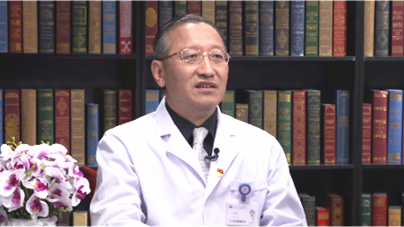

1.76 乳腺纤维腺瘤（乳腺纤维瘤）¶
罗斌 主任医师¶

清华大学附属北京清华长庚医院甲乳外科主任 主任医师 医学博士 研究生导师；
清华大学附属北京清华长庚医院乳腺中心负责人 外科部教学主任；中国医师协会外科医师分会甲状腺外科医师委员会委员；中国医促会甲状腺疾病委员会常务委员；北京乳腺病防治学会专家委员会常务委员；北京市高层次卫生人才“215”项目支持内分泌外科学术带头人。
主要成就： 发表SCI论文20余篇；国内最早开展乳腺癌保乳及肿瘤整形手术系列的医师之一，全部病例保乳手术比例约50%，最早开展乳腺癌新辅助化疗肿瘤消失后免乳房手术临床研究。
专业特长： 擅长乳腺疾病的各种手术，对保乳整形手术经验丰富，治疗时强调关注患者的生活质量，坚持领导多学科团队对经治的每一个患者进行讨论分析，提供最合理的个体化治疗决策；对甲状腺癌和相关手术有较深入的研究，对甲状腺癌的治疗提倡精准化治疗，反对过度治疗，秉持部分低风险微小甲状腺癌可以动态观察不用立即手术的理念。
乳腺纤维腺瘤（乳腺纤维瘤）是怎么回事？¶
（采访）乳腺纤维腺瘤是怎么回事？
乳腺纤维腺瘤属于乳腺良性疾病的一种，目前它的发病率大概占到乳腺里的第三位，最常见的是乳腺疼痛，第二常见的是乳腺纤维囊性病，第三常见的就是乳腺纤维腺瘤。乳腺纤维腺瘤是由两部分构成，一部分是乳腺里面主要的导管系统的上皮成分，还有一部分是上皮周围包绕的纤维结缔组织，这两个组织增生，构成的一种良性肿瘤，叫乳腺纤维腺瘤。
（采访）乳腺纤维腺瘤只要发现了，我们也不用过于担心，因为它肯定都是良性的。
是这样的。乳腺纤维腺瘤绝大部分是良性的，它含有乳腺的上皮成分，上皮是乳腺癌来源的一个组织，所以可能会有极小部分的纤维腺瘤恶变成乳腺癌或者同时合并乳腺癌，但是这个比例非常低。多低？千分之一到万分之二的比例，所以绝大多数的人有乳腺纤维腺瘤根本就不用担心。
（采访）您提到乳腺纤维腺瘤的发病率其实挺高的，排在乳腺疾病的第三位，具体有没有一个数字？
我们国家没有这个数字，北欧有统计，北欧25%的女性，会被发现有乳腺纤维腺瘤，所以1/4的人可以有。
（采访）主任，乳腺纤维腺瘤的好发人群都是哪些？
乳腺纤维腺瘤，主要好发于20-30岁的年轻女性，但是什么年龄的人都可以得，最常见的还是年轻人。
（采访）男性会不会得乳腺纤维腺瘤？
也有报告显示男性也有得乳腺纤维腺瘤的，但是非常少，因为男性的乳腺组织基本是不发育的。
乳腺纤维腺瘤（乳腺纤维瘤）是什么原因引起的？¶
（采访）乳腺纤维腺瘤到底是什么原因导致的？
因为乳腺纤维腺瘤多见于20-30岁的女性，甚至还有更年轻的女孩，我们知道这个年龄段女性的性激素、雌激素或者孕激素水平波动是比较高，所以纤维腺瘤跟激素，跟雌激素和孕激素的失衡，或者跟这个人的活动是相关的。
但是确切的原因还不知道，乳腺纤维腺瘤人群的高危因素，跟得乳腺癌的近似，乳腺癌也是女性激素水平变化，尤其是雌激素水平增高所引起来的。所以得乳腺纤维腺瘤的也是，就是月经越早来的小女孩，得的机会可能就越高一点。
（采访）主任，您说乳腺纤维腺瘤和雌激素、孕激素有关系，像吃短效的避孕药来进行避孕，而短效避孕药的成分就是少量的雌激素和孕激素，会不会增加女性得这个病的风险？
目前的研究没有证据证明，服用短效避孕药或者临时避孕药，会增加纤维腺瘤的发生率，目前没有。
（采访）主任，乳腺纤维腺瘤的发生和遗传有没有关系？
目前看和遗传是没有关系的，没有证据证明这个良性病是遗传或基因突变引起来的，现在没有证据证明。
乳腺纤维腺瘤（乳腺纤维瘤）有什么表现？¶
（采访）主任，得了乳腺纤维腺瘤之后会有哪些症状？
在没有广泛的应用超声这种医学影像检查的时候，主要是通过自己摸到乳房上有一个肿块，或者到医院检查，大夫发现一个肿块，所以首先是肿块，另外B超检查可以发现。
B超检查照的特点是边界比较清楚的，类似于椭圆形的，或者近似于圆形的低回声肿物，确诊是要依靠穿刺，扎到纤维腺瘤里面取出一些组织、细胞在显微镜下看，再诊断出纤维腺瘤。但通常是靠医生发现乳腺肿物，B超下有它的特点来诊断纤维腺瘤的。
（采访）就是通常纤维腺瘤是可以被自己摸到的。
对，一般不用B超，但现在大家单位里老是组织查体，年轻人也去查体，查体的时候拿B超一照，就能照到这样的结节，它有纤维腺瘤的B超特点，也可以诊断，在这种情况下通常在1厘米以下，摸是摸不到的，但是也可以发现。
（采访）主任，乳腺纤维腺瘤会不会有红、肿、热、痛的感受？
不会的，因为乳腺纤维腺瘤不是炎症，它是一个良性肿瘤，所以不会红、肿，但是有一小部分乳腺纤维腺瘤，摸起来有轻度的触痛，有的时候会有疼痛。
（采访）乳腺纤维腺瘤一般是单侧发病，还是双侧都会有？
乳腺纤维腺瘤还是以单发的，在一侧乳房的一个肿瘤最常见，但是它也可以有20%、30%在双侧乳房，或者在一个乳房里面有多个，类似纤维腺瘤这样的结节，所以双侧乳房多发也是它的一个特点，但比例并不太高。
怀疑是乳腺纤维腺瘤（乳腺纤维瘤）需要做什么检查？¶
（采访）主任，如果摸到了自己胸上可能有一个肿块，怀疑是乳腺纤维腺瘤，都需要做哪些检查？
摸到任何的乳房肿块，女同志都要到医院去检查，医生最关注的是首先要看年龄，如果年龄是二三十岁，你说有个乳房肿物，医生也通过触诊，发现肿物很光滑，有一定弹性，咕溜溜的乱转，再加一个B超检查，发现有B超的纤维腺瘤特点，椭圆形的、里面回声低，回声又比较均一，边界很清晰，根据这个就可以诊断是乳腺纤维腺瘤。
如果是四五十岁的人，也是同样的情况来，不光是医生要触诊，B超照一下，可能还会加一个乳腺X线，也就是通常所说的乳腺钼靶，或者叫乳腺夹板照相，把乳腺加起来照一张相，来看一看。最重要的是穿刺，穿刺到肿物里面抽出来，在显微镜下看，它确实是纤维腺瘤，这样我们才能帮你诊断清楚。
因为四五十岁的人，像在我们国家乳腺癌的高发年龄就是45-50岁，所以我们特别要把纤维腺瘤和其他肿瘤鉴别开，弄清楚。所以要想诊断纤维腺瘤就三点，一个是乳腺肿物，光滑的、活动的，二是B超有它的特点，三是穿刺，最后证实它是纤维腺瘤。
（采访）诊断乳腺纤维腺瘤是都需要做穿刺检查吗？
确诊是需要有病理结果的，需要穿刺或者切出来检查，但是一般的，比如年轻人有肿块，另外有B超的特点，其实根据这两个就基本能诊断是纤维腺瘤，只有年纪稍微偏大的，比如是四五十岁的，跟乳腺癌的好发年龄又一样，这个时候我们应该考虑加一个穿刺，证明它确实是纤维腺瘤，才能告诉病人有的可以观察。
乳腺纤维腺瘤（乳腺纤维瘤）要和哪些疾病区分开？¶
（采访）乳腺纤维腺瘤需要和哪些其他的疾病进行鉴别吗？
如果是年轻女性，一个是要和慢性的炎症鉴别，有一种炎症，尤其是生产过、喂过奶的女性，她们乳腺乳晕的周围也可以有肿块，这种肿块边界不清楚，有的时候还有红肿，我们叫慢性乳腺炎，或者叫肉芽肿性乳腺炎，这个要鉴别，因为它治疗的策略是不一样的。
其中最重要的鉴别就是和乳腺癌的鉴别，非常重要。多数人来看病也是，我们通过检查，问病史，通过触诊，通过B超，更需要的时候做穿刺，来明确它是纤维腺瘤，而不是乳腺癌，来缓解她的顾虑，这才可以。
（采访）想要把纤维腺瘤和其他肿瘤进行鉴别，都需要做什么检查。
一是触诊，一个有经验的医生能够鉴别出来是纤维腺瘤，还是恶性肿瘤，这样的机会大概是80%-90%，但光凭这个是不行的。我们有些辅助检查，超声是非常重要的，如果年龄在40岁以上，我们可能考虑加一个乳腺X线。
也就是通常所说的乳腺钼靶，或者叫乳腺夹板照相，把乳腺夹起来照一张相，来看一看。另外再结合病人的年龄特点，肿瘤的B超特点，还有病人有没有家族史，有没有乳腺癌的高危因素，再挑一些病人做穿刺，来明确诊断。
乳腺纤维腺瘤（乳腺纤维瘤）和乳腺增生有什么区别？¶
（采访）主任，乳腺纤维腺瘤和乳腺增生有什么区别？
乳腺增生有乱用的趋势，只要一个女同志乳房有点疼痛，有疙瘩的感觉，就给戴一个乳腺增生的帽子，实际上有滥用的趋势，这种滥用会造成病人的焦虑和心理负担。实际上真正的乳腺增生，是做手术取出来了这些标本以后，在显微镜下看，它的导管上皮，或者是上皮外面的纤维组织里有增生的情况，我们才说有乳腺增生。
由于增生也会让人家以为，乳腺增生容易得癌，其实并不是这样的，只有一种增生，就是导管上皮的非典型增生，得乳腺癌的机会才比普通女性高4-5倍。所以所谓的增生，就是乳房会有一些疼痛，摸起来会有疙瘩的感觉，但是乳腺纤维腺瘤是具体的肿块，这还是不一样的，它也没有那种疼痛，或者月经前疼痛的特点。
（采访）主任，像平时月经前可能会有疼痛，或者摸着有疙瘩的感觉，这样不算乳腺增生算是什么？算是一种病吗？
这不是病，这是一个正常的生理过程，因为女性在月经前，由于雌激素和孕激素的作用，乳房会充血、会水肿，有人计算过，在月经前最肿的时候，乳房的体积比平时要大15cm3-30cm3，所以你的体积有变化。乳房里面布满了感觉神经，由于短时间内体积的变化，会让这些神经受到刺激，所以会有一些胀痛的感觉，这是正常的生理现象，这不是病态。
乳腺纤维腺瘤（乳腺纤维瘤）会自己缩小吗？¶
（采访）主任，乳腺纤维腺瘤会不会随着时间的过去，就慢慢长大。
有一部分人的纤维腺瘤会慢慢长大，当然了，触诊也能发现它长大，B超测量也能发现它长大，但是还有10%，甚至到40%的乳腺纤维腺瘤，观察时间5年、10年，足够长的时候，它是会慢慢减小的，甚至会消失，多数不变，就那么大。
（采访）主任，乳腺纤维腺瘤有什么样的危害吗？
危害倒没有，因为它是个良性疾病，只要它不长大，不对外形构成影响，没有危害或者其他影响。
乳腺纤维腺瘤（乳腺纤维瘤）会变成恶性的吗？¶
（采访）主任，乳腺纤维腺瘤会发生恶变吗？
这个问题非常好，也非常重要，是大家想了解的，一般来讲乳腺纤维腺瘤发生恶变是有可能的，但是概率非常低。国外的研究表明，大概是千分之一到万分之二左右。我们国家天津肿瘤医院曾经发表过一个研究，他们的报告显示，纤维腺瘤恶变的概率是万分之三，所以会有恶变，但是非常非常低，不用担心。
如果恶变，也会有它的特点，首先纤维腺瘤恶变人群的年龄比较大，不是二三十岁，平均年龄是四十五岁，这是第一点。第二点，肿瘤可能在观察过程中有长大的趋势，另外它的超声影像也会不是那么典型的像纤维腺瘤的特点，这种情况下可能考虑要做活检，要做穿刺，来帮助医生明确诊断。
乳腺纤维腺瘤（乳腺纤维瘤）对怀孕有影响吗？¶
（采访）主任，乳腺纤维腺瘤对于女性怀孕有没有影响？
以前中文教科书上是这么写的，建议纤维腺瘤在怀孕之前要处理掉，确实有一部分纤维腺瘤，可以在怀孕的时候长得比较快，会长大。但是有研究表明，纤维腺瘤经过观察，经历了怀孕，大概有75%-80%的病人不长、不变化，长大的只是少数。
（采访）如果有乳腺纤维腺瘤的女性想要怀孕，需要先治疗吗？
我通常是跟病人这样解释的，如果你的纤维腺瘤就1厘米，2厘米，又不是长在乳头、乳晕的下方，你自己又没有强烈的想做手术的意愿，完全可以观察，如果纤维腺瘤长大了，到时候再处理也是可以的。如果纤维腺瘤在2厘米以上，自己非常的顾虑，而且自己的纤维腺瘤在观察期间有变大的趋势，我建议在怀孕之前把它处理掉。
（采访）对哺乳会有影响吗？
没有影响，只要不是长在乳头、乳晕的下方，也没有那么大，就没有影响。
乳腺纤维腺瘤（乳腺纤维瘤）怎么治疗？用做手术吗？¶
（采访）主任，乳腺纤维腺瘤应该怎么样去治疗？
这很重要，乳腺纤维腺瘤因为多数人不长大，所以绝大多数比较小的纤维腺瘤，比如2厘米以下的纤维腺瘤，可以观察，不需要任何治疗，定时到医院去做个B超复查一下，自己手摸也能够感触到有没有变化，有几种情况考虑要做手术。
一、纤维腺瘤比较大，我们所说的大，一般是指大于2厘米或者3厘米，比较大。二、有时候疼痛，纤维腺瘤引起了不舒服的感觉。三、自己很紧张、很顾虑，虽然医生告诉你这是纤维腺瘤，但是你总是担心，在这种情况下可以考虑手术治疗。
还有一点，就是纤维腺瘤在观察的过程中，发现它在逐渐长大，比如去年做B超它是1厘米，今年再做B超变成了2厘米，说明它有长大的趋势，这个也是要考虑做手术的。
乳腺纤维腺瘤（乳腺纤维瘤）的手术是怎么做的？¶
（采访）主任，乳腺纤维腺瘤手术治疗的方法都有哪些？
一般有两种方法，现在有一些可以做微创美容手术的，叫做乳腺微创旋切手术，就是类似圆珠笔芯的一根旋切针在B超的引导下，B超照着肿瘤在这儿，B超照好了，旋切针从乳腺隐蔽的部位扎进去，通过里面的机构，一激发，一条一条的把纤维腺瘤吸出来，这个叫微创手术，我们叫美容手术。
还有一种就是传统的方法，在乳腺的皮肤上做一个切口，到达乳腺组织，把纤维腺瘤切出来再缝上，这个就是乳腺表面会有切口，有一个疤痕，如果纤维腺瘤比较小，我们一般认为小于2.5厘米，做微创手术都是有可能的。
（采访）那就是大于2.5厘米，可能就必须要做传统手术切除。
做手术微创不方便，微创要一次一次的切，切得太多、太费劲。国外还有方法，国外用冷冻的方法，B超照着纤维腺瘤，然后拿一根冷冻针或者是用热的物理方法，射频的针，扎到纤维腺瘤里面，然后冷冻把它变成一个冰球，纤维腺瘤组织就都坏死了，热的射频也是，用热的，物理的方法，让里面的纤维腺瘤组织坏死，这种也是微创方法，但国内用得还不太普遍。
（采访）主任，对于乳腺纤维腺瘤，进行手术的时候，一般是局麻还是全麻？
比较小的纤维腺瘤，做微创手术一般都是局麻，如果比较大的纤维腺瘤做手术，我个人是喜欢用全麻，因为这样可以把切口做得很隐蔽，离肿瘤比较远，多做一些分离，这样病人也不疼。
把切口通常选在比较隐蔽的位置，选在乳晕边缘，或者是乳腺最外缘，这样比较隐蔽的部位，我们一般不在乳腺纤维腺瘤上面直接做这样的切口，这样的切口慢慢要被淘汰的，不美观。
乳腺纤维腺瘤（乳腺纤维瘤）手术治疗对乳房外形影响大吗？¶
（采访）主任，是不是乳腺纤维腺瘤，不管是做微创手术，还是做传统手术，都不会对乳房外观造成很大影响？
一般不会，但是乳腺纤维腺瘤如果太大，5厘米、8厘米。有时候就会造成影响，切完了之后局部会有一些凹陷，但是在这种情况下，如果医生能够判断出来，它可能会有影响，医生在手术的同时，会做一些整形工作，让切除完的坑变得小一些，或者来消灭切除完出现的坑，所以一般来讲不至于引起乳腺外形的变化。
（采访）主任，整形工作大概都有哪些？
这个就比较复杂，我们会根据肿瘤在乳房里不同的部位，用不同的技术，总而言之就是把大瘤子切掉了，用周围的乳腺来把这个坑给消灭掉，是这样的。
手术治疗乳腺纤维腺瘤（乳腺纤维瘤）会有什么风险？¶
（采访）主任，手术治疗乳腺纤维腺瘤会有什么样的风险或者并发症？
无论是微创手术，还是开放的经典手术，它的操作都不算是一个大手术，是一个中小型手术，但是这也是要医生非常认真做的，它没有特别的并发症，就是常见的手术并发症，一个是伤口感染，一个是出血。
伤口感染一般是在手术后四五天，开始在手术区域，切口周围出现红、肿、疼，甚至发烧，你就要到医院去看了，找你的手术大夫看看是不是伤口感染。伤口的血肿、出血，一般发生在手术后24-48小时，伤口这个地方的纱布被血浸湿了，或者乳房手术的区域鼓起来了，呈蓝色、青色的表现，这可能是有出血、有血肿，要找医生看，必要的时候可能还需要再次手术止血。
手术治疗乳腺纤维腺瘤（乳腺纤维瘤）有禁忌证吗？¶
（采访）手术治疗乳腺纤维腺瘤有什么样的禁忌证吗？
一般来讲没有太明确的禁忌证，除非凝血功能特别障碍，可能要先处理一下，一般来讲如果年龄要是比较偏大，可能还是要在术前明确一下，它到底是不是乳腺纤维腺瘤，比如做个穿刺，穿刺到肿物里面抽出来，在显微镜下看，确实是纤维腺瘤，这样我们才能帮你诊断清楚。
因为四五十岁的人，像在我们国家乳腺癌的高发年龄就是四五十岁，你以为它是纤维腺瘤，结果最后切下来发现它是个乳腺癌，这就不是最佳的处理方法了。
乳腺纤维腺瘤（乳腺纤维瘤）患者手术后要注意什么？¶
（采访）主任，乳腺纤维腺瘤的患者，如果做完手术之后，需要注意什么吗？
一般如果是微创手术的，微创手术是拿旋切刀，一刀一刀把纤维腺瘤切下来，原来有瘤子的地方就成了一个坑，瘤子没了，坑就会积血，所以通常这种情况下，医生会把你的乳房和胸这个地方加压包扎，你可能手术后一两天活动不太方便，需要休息一下。
那么做的开放手术，它也没有什么特别要注意的，局部缝得很好，或者局部也会做加压包扎的工作。一般休息三五天，伤口就会比较好，可能两周之内还是不要做剧烈活动，因为乳腺里面都是创伤后的反应，疤痕才刚刚形成，你做剧烈活动的时候，去体育运动，再一振动，可能原来刚刚长在一起的伤口又开了，会引起血肿或者什么。
（采访）乳腺纤维腺瘤做完手术之后留个坑，什么时候能完全长好？
我说的坑表面是平的，肉眼看不见，但是里面缺损的地方是有积液和积血填在那的，这些积液和积血要完全机化，变成肉长在那，一般至少需要一两个月的时间。
（采访）就是这一两个月的时间是不是都不能剧烈活动。
不要剧烈活动，一般上班是完全可以的。
（采访）主任，乳腺纤维腺瘤的患者做完手术切除之后，在生活上、饮食上有没有需要注意的？
没有特别需要注意的，正常生活、饮食就可以，可能有些人会说，忌这个，不让吃肉，忌那个，不让吃冷的、酸的、辣的，其实没有关系，就是正常饮食，你平时吃什么，现在还吃什么。
（采访）不需要治疗的乳腺纤维腺瘤的患者，平时生活中需要注意什么？
也不太需要注意什么，当然了，那种过分劳累，情绪总是压抑，肯定是不好的，正常生活，饮食、锻炼就可以了。
乳腺纤维腺瘤（乳腺纤维瘤）手术后复发了怎么办？¶
（采访）主任，乳腺纤维腺瘤如果做完手术切除之后又复发了该怎么办？
纤维腺瘤有多发的特点，有两个乳房同时生长的特点，所以有时候我们把它叫做复发，就在你做手术的部位附近，又长出来了，叫复发，有这种概率，概率也不低，可以达到10%，甚至20%。我还是这个观点，就和没做手术一样，绝大部分的乳腺纤维腺瘤是不需要手术的，它也不会引起身体里的不舒服，又不会引起乳腺外形的变化，又极少恶变成乳腺癌，所以1厘米大小的，2厘米以下的，不需要处理，仍然可以观察。
（采访）主任，乳腺纤维腺瘤的患者做完手术之后需要回医院复查吗？
因为它是个良性病，良性病就不太需要反复复查，又是年轻人，也不是乳腺癌的高发人群，所以不刻意的去复查，可能过一两年再去检查一次，没有必要去刻意复查。
乳腺纤维腺瘤（乳腺纤维瘤）是良性的还是恶性的？¶
乳腺纤维腺瘤绝大部分是良性的，它含有乳腺的上皮成分，上皮是乳腺癌来源的一个组织，所以可能会有极小部分的纤维腺瘤恶变成乳腺癌或者同时合并乳腺癌，但是这个比例非常低。
多低？千分之一到万分之二的比例，所以绝大多数的人有乳腺纤维腺瘤根本就不用担心。
乳腺纤维腺瘤（乳腺纤维瘤）自己能摸到吗？¶
在没有广泛的应用超声这种医学影像检查的时候，主要是通过自己摸到乳房上有一个肿块，或者到医院检查，大夫发现一个肿块，所以首先是肿块，另外B超检查可以发现。
确诊是要依靠穿刺，扎到纤维腺瘤里面取出一些组织、细胞在显微镜下看，再诊断出纤维腺瘤。但通常是靠医生发现乳腺肿物，B超下有它的特点来诊断纤维腺瘤的。
（采访）就是通常纤维腺瘤是可以被自己摸到的。
对，一般不用B超，但现在大家单位里老是组织查体，年轻人也去查体，查体的时候拿B超一照，就能照到这样的结节，它有纤维腺瘤的 B超特点，也可以诊断，在这种情况下通常在1厘米以下，摸是摸不到的，但是也可以发现。
确诊乳腺纤维腺瘤（乳腺纤维瘤）都要做穿刺病理检查吗？¶
（采访）诊断乳腺纤维腺瘤是都需要做穿刺检查吗？
确诊是需要有病理结果的，需要穿刺或者切出来检查。
一般的，比如年轻人有肿块，另外有B超的特点，其实根据这两个就基本能诊断是纤维腺瘤。只有年纪稍微偏大的，比如是四五十岁的，跟乳腺癌的好发年龄又一样，这个时候我们应该考虑加一个穿刺，证明它确实是纤维腺瘤，才能告诉病人有的可以观察。
快要来月经时乳房胀痛，正常吗？¶
这不是病，这是一个正常的生理过程，因为女性在月经前，由于雌激素和孕激素的作用，乳房会充血、会水肿。有人计算过，在月经前最肿的时候，乳房的体积比平时要大15cm3-30cm3，所以体积有变化。
乳房里面布满了感觉神经，由于短时间内体积的变化，会让这些神经受到刺激，所以会有一些胀痛的感觉，这是正常的生理现象，这不是病态。
乳腺纤维腺瘤（乳腺纤维瘤）怀孕前要手术切掉吗？¶
（采访）如果有乳腺纤维腺瘤的女性想要怀孕，需要先治疗吗？
我通常是跟病人这样解释的，如果你的纤维腺瘤就1厘米，2厘米，又不是长在乳头、乳晕的下方，自己又没有强烈的想做手术的意愿，完全可以观察。
如果纤维腺瘤长大了，到时候再处理也是可以的。如果纤维腺瘤在2厘米以上，自己非常的顾虑，而且自己的纤维腺瘤在观察期间有变大的趋势，我建议在怀孕之前把它处理掉。
（采访）对哺乳会有影响吗？
没有影响，只要不是长在乳头、乳晕的下方，也没有那么大，就没有影响。
乳腺纤维腺瘤（乳腺纤维瘤）在什么情况下要手术切除？¶
有几种情况考虑要做手术。
一、纤维腺瘤比较大，我们所说的大，一般是指大于2厘米或者3厘米，比较大。
二、有时候疼痛，纤维腺瘤引起了不舒服的感觉。
三、自己很紧张、很顾虑，虽然医生告诉你这是纤维腺瘤，但是你总是担心，在这种情况下可以考虑手术治疗。
还有一点，就是纤维腺瘤在观察的过程中，发现它在逐渐长大，比如去年做B超它是1厘米，今年再做B超变成了2厘米，说明它有长大的趋势，这个也是要考虑做手术的。
乳腺纤维腺瘤（乳腺纤维瘤）微创旋切手术¶
现在有一些可以做微创美容手术的，叫做乳腺微创旋切手术。就是类似圆珠笔芯的一根旋切针在B超的引导下，B超照着肿瘤在这儿，B超照好了，旋切针从乳腺隐蔽的部位扎进去，通过里面的机构，一激发，一条一条的把纤维腺瘤吸出来，这个叫微创手术，我们叫美容手术。
我们一般认为小于2.5厘米，做微创手术都是有可能的。做微创手术不方便，微创要一次一次地切，切得太多，太费劲。做微创手术一般都是局麻。
微创手术是拿旋切刀，一刀一刀把纤维腺瘤切下来，原来有瘤子的地方就成了一个坑，我说的坑表面是平的，肉眼看不见，但是里面缺损的地方是有积液和积血填在那的，这些积液和积血要完全机化，变成肉长在那，一般至少需要一两个月的时间。
所以通常这种情况下，医生会把乳房和胸这个地方加压包扎，可能手术后一两天活动不太方便，需要休息一下。